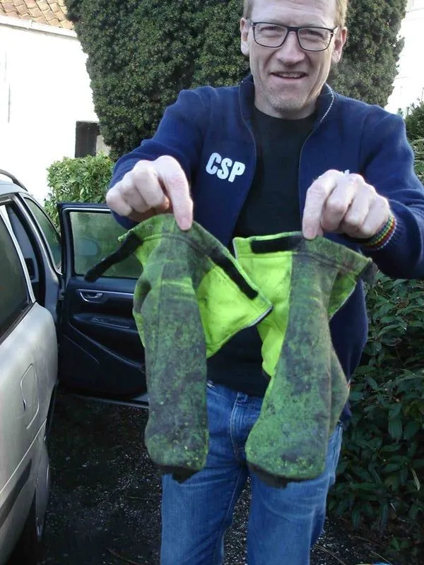
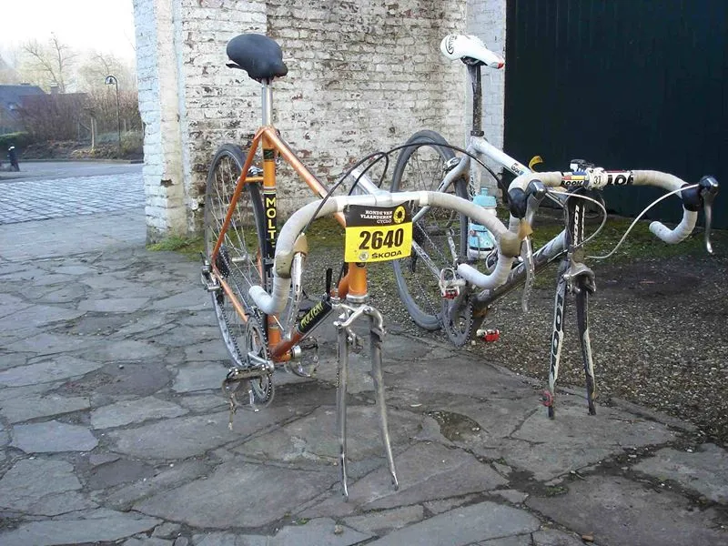
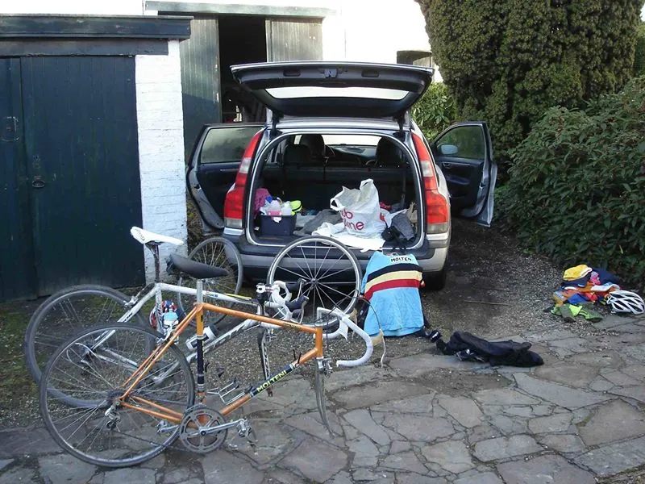

Løbsberetning: Ronde van Vlaanderen Cyclo 2015

Per har sat sig for at gennemføre både Paris-Roubaix Challenge 2015 og Ronde van Vlaanderen Cyclo 2015 – Flandern Rundt for amatører. Første stik er nu taget.
Af Per Hansen
Hermed en lille historie om Jens Ankerstjernes og min tur til Flandern Rundt for motionister. Et motionsløb på samme rute som de professionelle – Ronde van Vlaanderen Cyclo 2015.






Det var sidste år jeg begyndte at finde info om motionscykelløb ifm. med de store klassiske cykelløb.
Paris-Roubaix Challenge dukkede op og samme organisation viste sig også at arrangere Flandern Rundt og Liege-Bastogne-Liege
For mit vedkommen da drømte jeg om at nappe alle tre – umiddelbart dog en ordentlig mundfuld.
Knap så meget pga af distancer, terræn osv, men mere sådan i forhold til arbejde og familie … Det endte så med at jeg lagde mig fast på 2/3. Læs om Per’s Parix-Roubaic Challenge.
Ronde van Vlaanderen Cyclo 2015 og Parix-Roubaix Challenge
Og nu er første stik taget, andet venter lige om hjørnet sammen med Niels Bjørnsteen. På den gamle stål cykel og i uld.
Jens og jeg kørte mod Oudenaarde fredag morgen kl. 0600. Jens havde fremskaffet privat indkvartering i en lille flække ved navn Maarkedal – lige uden for Oudenaarde.
Det skulle vise sig at være en lige så stor oplevelse som selve løbet. Mere om det senere.
Ankomst Maarkedal kl. 16.20.
Indkvartering, lidt indkøb og så afsted til Ourdenaarde og hente startnummer mv.
Byen var på den anden (cykel)ende
Udover at Flandern Rundt er Belgiens største cykelløb, så er motionsudgaven også en kiosk basker af de helt store: 16.000 deltagere !! Heraf 4000 på den lange tur på 250 km. – som Jens og jeg havde kastet os ud i.
Som sagt, indkvartering privat.
Sammen med en irer (som vi selvfølgelig straks døbte Sean Kelly), en nordmand, en spanioler fra Mallorca (og senere hans familie), to taiwanesere, sønnen i huset (Frederyck), hans søster, en lokal pige fra Maakedal, samt værtsparret – Frederycks forældre.
Ingen smalle steder
Sørget for alt! Vi fik anvist rum, store madrasser lå allerede fremme – opredte!
Vi skulle sove i rum sammen med ”Sean Kelly”, men han fortrak da han hørte vi skulle køre den lange og op før en hvis herre.
Værterne diskede op med varm aftensmad, øl og vin – så depoterne blev fyldt godt op! Derefter tjekke vejrudsigt, beslutte sig for påklædning, lægge frem, fylde dunke, pakke bilen med cyklen og i seng.
Vejrudsigten lovede lidt småregn om formiddagen og ca 10 grader. OK.
Ikke kørte rør, men løse ben og vindvest.
Op klokken 04:00
Afgang med Oudenaarde klokken 04:40 for at blive transporteret i bus til startstedet i Brugge. Vejret var OK i Oudenaarde. Tørt og ca 9 grader. Det tegnede godt …… Regnjakken kom dog med i baglommen.
Ind i bussen sammen med en masse andre. Heldigvis var der toilet ombord. Det er vigtigt for en mand på 46 der bare er kronisk tissetrængende gentagne gange om morgenen.
I bussen høj musik og livlig snak – på flere forskellige sprog. Sjovt, men lidt svært at få lukket et øje.
Jeg skulle jo også pisse hele tiden…
Vi blev sat af et eller andet mærkeligt sted i udkanten af Brugge.
Starten foregår jo altid på den gamle centrale plads midt i byen. Vi fulgte strømmen og blev ledt mod centrum og start.
Vi havde ikke lys på
Efter 20 sekunder blev vi stoppet af en Belgisk politimand.
Jens forklarede sindigt den flinke politimand, at vi bare skulle ind til start og ikke ville køre før det var lyst … Nå, OK sagde han.
Ind til start, tisse nok engang og afsted i mere eller mindre mørke.
Vi gemte os i feltet. Starten foregik på den måde at man køre kørte når man var klar.
Det gjorde vi så, og lagde mærke til at regnen langsomt tog til. Regnjakken kom på. Snørklede veje ud af Brugge og endelig ind på noget almindelig vej uden for bygrænsen.
Vi var i et felt på vel ca. 200-300 mand. Det fylder jo på vejen.
Men politiet ville have os ind i siden at køre. Det effektuerede de på den måde, at de kørte motorcyklen med blå blink i gang frontalt IMOD os på midterstregen! Så kunne vi sgu bare flytte os! Det gjorde 4 gange.
Skal love for der blev maset og råbt osv. Nå, men det blev de så trætte af da vi ikke ville lystre.
Regnen tog til …… vi blev våde og kolde, og det gjorde ikke bedre at tempoet ikke var særlig højt. Så kunne man sidde der og fryse og blive mere og mere kold og våd.
Derfor besluttede vis os for at give den gas og blive ved med at køre frem mod nye felter / grupper.
Det gav varmen og den fordel, at man så ikke lå i et felt og blev dænget til med vand og skidt fra de forankørende.
Prisen var jo så at få lidt vind på snuden. Men hellere det. Efter ca 100. km kommer den første alvorlige stigning.
Intet problem og betød også bare at man fik varmen. Regnen fortsatte og vi var efterhånden godt gennemblødte.
Honningkagerne var særligt gode! Afsted igen.
Ikke overkroppen (regnjakke), men særligt fødder og hænder var nærmest følelsesløse. Efter 130 KM måtte vi i depot og tanke.
Vejene var fyldt med skidt (som de altid er om foråret), og vi var blevet godt brune på ben og arme og ansigt.
Jens og jeg fortsatte strategien med at køre os varme, dvs springe fra gruppe til gruppe. Efter endnu en stigning så vi at flere kørte ind på fortovet.
De kunne lige smide cyklen gennem nogle større huller/passager i hækken og hoppe op på fortovet.
Idiotisk tænkte vi. Det er sgu nok sådan noget sikkerhedspjat med ikke at være på vejen. Nej, vi bliver sgu på midt på vejen, der ruller det! Tossehoveder! Efter 20 sekunder blev vi meget klogere…
Asfalten afløstes af nogle satans knoldede borsten – og det begyndte samtidig at gå nedad, for at ende i et 90 graders sving! Vi trak vores ord i os igen….
Jeg tog dog en beslutning og kastede cyklen ind på fortovet, mens Jens måtte kæmpe sig nedad brostenene – i fin og flot stil!
På et tidspunkt kom vi i læ bag en stor stærk Belgier der virkelig kunne træde en ordentlig mølle! Han kendte rute om området og var vant til at træne i det her møgvejr. Så kom de første brosten.
Når det nu regnede og man var kold var lykken! Det satte gevaldigt gang i blodomløbet og man fik varmen igen! Så man kørte jo der og glædede sig til næste brostensstykke.
Dette næste stykke med brosten var vist nok Kerkgate….
Her kunne jeg ikke holde trit med Jens og ham Belgieren. Det gik let opad og jeg måtte så sidde der på mellemhånd. Pisse hårdt at forsøge at lukke et hul på brosten. Jeg bandede, trådte til og stirrede blot ned foran i stenene … og kørte som en gal.
Pludselig blev der så stille
Ingen foran mig, ingen bag mig. Var jeg kørt forkert? Ja, det var jeg Sgu! Vende om, tilbage. Skulle være drejet af til venstre. I stedet var jeg fortsat med at hamre op ad brostenene.
Nu fik jeg ikke sådan lige med det samme kørt op til Jens og hans Belgiske følgesvend. Nå, men fortsatte og konstaterede samtidig at bremse gummiet da bestemt var svundet ind.
Bremserne svigtede – Jeg kørte i grøften!
Efter ca 140-160 Km kom vi ind på endnu et brostensstykke – Paddestraat mener jeg det var.
Det gik først op, derefter let nedad med bløde kurven i bunden kunne jeg se vi skulle skarpt til højre ud på asfalt. Ville tage lidt af gassen, men intet skete da jeg trak i bremserne. Heller ikke anden gang.
Fuck! Nå men på mine træningsture fra Vejle til Odense og tilbage i regn og mørke, havde jeg jo erfaring med at køre i rabatten / grøften.
Så det gjorde jeg bevist for at stoppe. Ikke i grøften, men ud i rabatten og op ad en skråning. Fik funktion i bremserne igen.
Men fra da af turde jeg simpelthen ikke køre til særligt nedaf. Så resten af turen blev i mere moderat tempo.
Ud og finde et spor i rabatten
Det gav så til gengæld masser overskud på alle stigningerne, hvor jeg kunne køre forbi alt og alle – for så at blive passeret af de samme igen på nedkørsler!
Dvs. på brostens stigningerne var det ikke altid det var muligt at passere. Afhang af trafik og beskaffenheden af brostensbelægningen. På midten bedst.
Efter vel 4 ½ time stoppede regnen. Men da var an jo allerede våd og møgbeskidt.
Det var så også dette der blev motivationen – altså, at køre Flandern rundt i sådan noget legendarisk og episk vejr! Man skal jo finde de positive sider mens man moser på.
På en af træningsturene hjemme, kunne jeg så også lige huske Peter Meinerts ord om de her betonveje man ofte kører på i Belgien.
De har den udmærkede egenskab, at der i midten er en pæn rille der lige passer til et cykeldæk/hjul. Dem skulle man lige tage sig i agt for.
En trænet Belgier kunne man nemt spotte: De hoppede hen over midterrabatten når det var nødvendigt.
Vejene begyndte også at tørre op. Det var tiltrængt. Og fødder og hænder blev tørre.
Kendte stigninger på stripe
Herefter kom de kendte stigninger på stribe efter hinanden: Koppenberg, Taaienberg, Kaparij, Kanarieberg, Kruisberg, Oude Kwaremont, Paterberg
Forinden var passeret Wolvenberg, Molenberg, Leberg, Valkenberg og Eikenberg bla. i alt 17 stigninger.
To stigninger voldte besvær og måtte passeret gående: Koppenberg og Oude Kwaremont.
Lagt de fleste måtte af cyklerne. De var umulige at køre på.
Våde og fedtede brosten – glatte som brun sæbe.
Oude Kwaremont er ikke stejl, men brostens belægningen er ringe og møg glat i vådt føre. Forsøgte at komme på cyklen flere gange, men cyklen gled og man faldt.
Sammen med hundrevis af andre der også måtte i stenene flere gange indtil de opgave og i stedet trak. På toppen på cyklen igen. Fantastisk atmosfære.
Mange tilskuere og de store fanklubber og campere var til stede og ved at indtage deres pladser til morgendagens proff.
Fra toppen af Oude Kwaremont bugter brostenene sig svagt nedad. For at ende i et 90 graders sving og ud på en hovedvej. Herefter var der 5 km til Paterberg.
Koppenberg er stejl! Den var også helt umulig at cykle opad.
Paterberg-tilkørslen var fed!
Fuldstændig som jeg kunne huske den fra de utallige klip jeg har siddet og set fra Flandern Rundt i garagen på rullen i vinterens løb.
Det eneste problem var jo bare, at jeg ikke stolede på mine bremser. Så jeg turde ikke give gas nedad. Øv, når nu man godt kan lide at køre med fuld skrue på nedkørsler.
Men så måtte jeg nøjes med at give gas op ad Paterberg.
Paterberg forløber således:
- Nedad på bred hovedvej
- i bunden 90 grader til høje ind på en meget smal vej
- ca. 500 meter og så ind på Paterberg.
- Maks 22%, gns. 12,9.
Heldigvis var brostenene her helt tørre. Så der kom jeg op i fin stil siddende på cyklen (eller stående).
Finalen i Ronde van Vlaanderen Cyclo 2015
Paterberg er sidste stigning. Derefter er der 10 km flad vej ind til mål i Oudenaarde. I modvind … Og de 240 km. kunne da mærkes lidt efterhånden.
Det var da bestemt lange 10 km.
- Start 7:26
- I mål 16:21
Dette var inklusive 3 pitstop, en forkert afstikker, og nødttempo grundet bremsernes beskaffenhed. Men igennem kom jeg og det var og er hamrende fedt at have kørt det løb!
Det skal gentages til næste år. That for sure! I mål mødte Jens mig med orangina og en stor Hollybar”. Jens var inde 15.42.
Man får stor respekt for dem der ligger og træner / køre løb dernede – på de veje og under de forhold. Lokale Belgiere som udlandsproffer der kører løb efter løb.
Så er det sgu nemt at køre løb i DK! Dog fortalte ham den store Belgier, at de altså ikke lå og trænede på brostenene – dem gad de sgu ikke køre på.
Men alligevel. De første 100-115 km kedelige. Men derefter et totalt fedt cykelløb og totalt fedt at køre alle de stigninger og brostensstykker.
Velordnet arrangement og total cykelstemning hos de lokale – og godt øl.
Vi havde jo vores bil parkeret lige ved målområdet. Havde heldigvis husket tørt og varmt tøj. Hjem til værterne, i bad, og så ellers ind til et veldækket aftensbord med lækker mad, vin og øl.
Snakken gik livligt blandt alle gæsterne. Fantastisk! Det var lige sådan en beskrivelse af cykelløbet fra
hoften.
Udstyr
- Cykel: Kogaa Miyata Pro Racer, årgang 1979
- Gruppe: Dura race over hele linien
- Fælge: Mavic module
- Dæk: Veloflex master 25 mm (dæktryk 6-6,5 bar)
- Gearing: 54/42 – 14/26
- Pedalarme: 175 mm (tak Karsten Lykke..!)
- Pedaler: Campa record med XL tåklips
- Sko: Adidas Eddy Merckx
- Min Rapha regnjakke var lykken. Den holdte overkroppen tør i regnen.
- Uldbukser og uldtrøje yderst. Tynd vindvest/svedtrøje inde under